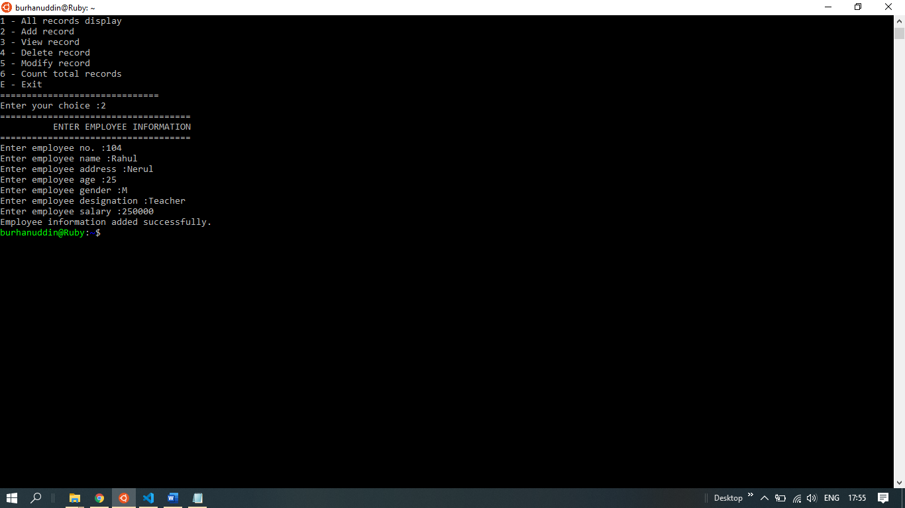

Simple Employee Database Management System
The objective is to create a database of employees. The user has full access to add, delete, modify or view the total number of employees he has using this program. Shell scripting was used to make the program, the data file is created as soon as the user adds, deletes or modifies the table or the database. The data file displays every single information of the employees and it gets updated time to time as the user makes changes.
Employee database system is a shell scripting code that helps the user to maintain the employee database. It is a user interactive program in which you can add, delete and modify Employees. It is a small representation of how employee database works in real life.